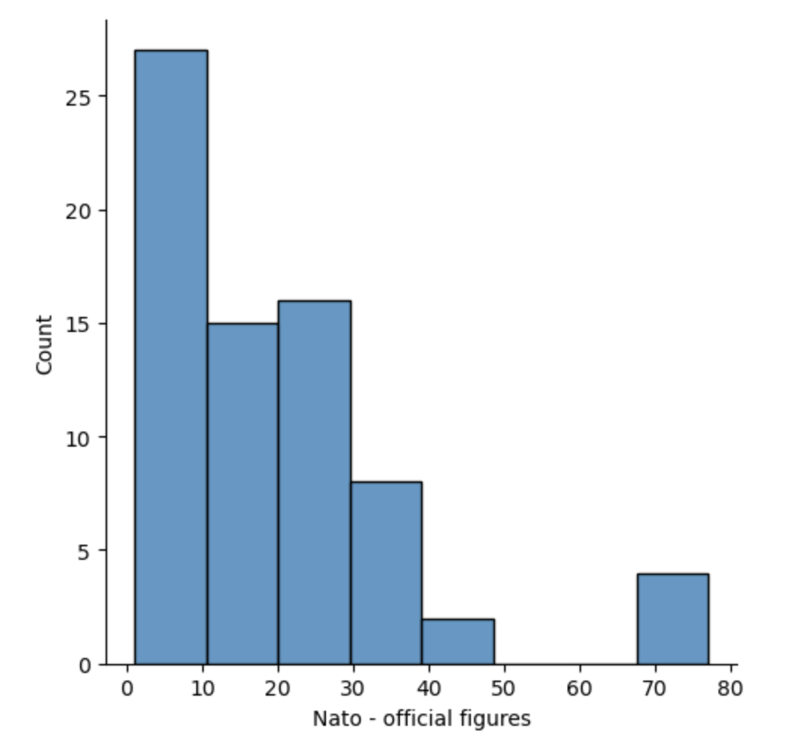
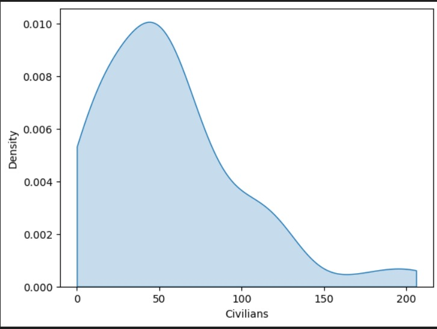
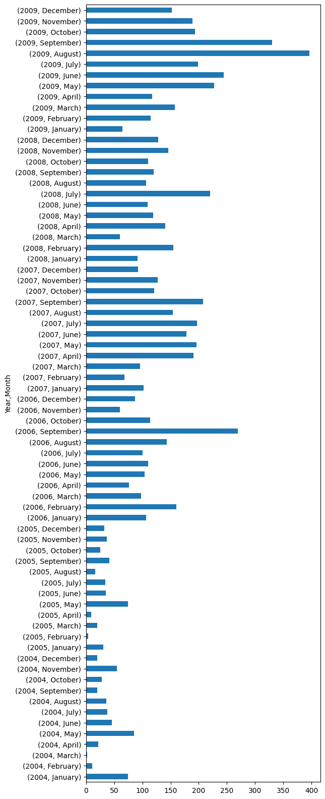
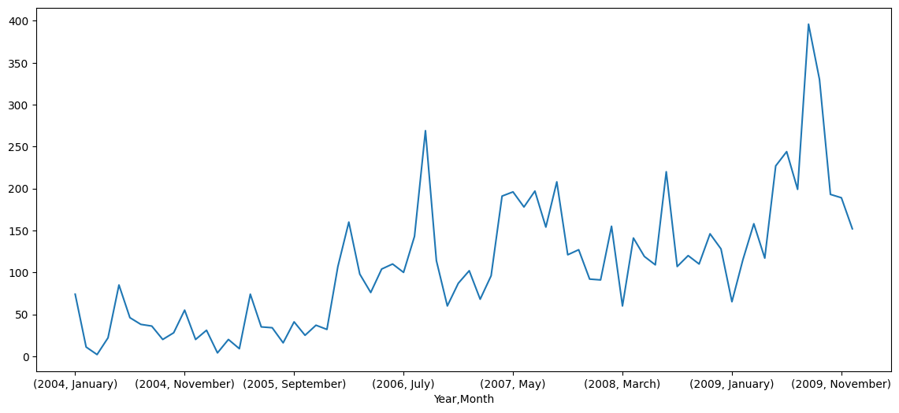

Group 1: Maria Chatzigeorgiou, Sophie Deahl, Balint Rekasi, Kian Smit
In this assignment, we plotted various graphs using Python and the data provided. Below are some of the graphs we created, along with brief explanations of what each graph represents.
This histogram shows...
The kernel shows...
This bar plot "Displays the total number of casualties (including both civilians and Afghan forces) on a monthly basis over a six-year period during the Afghan War."
This chart shows...
